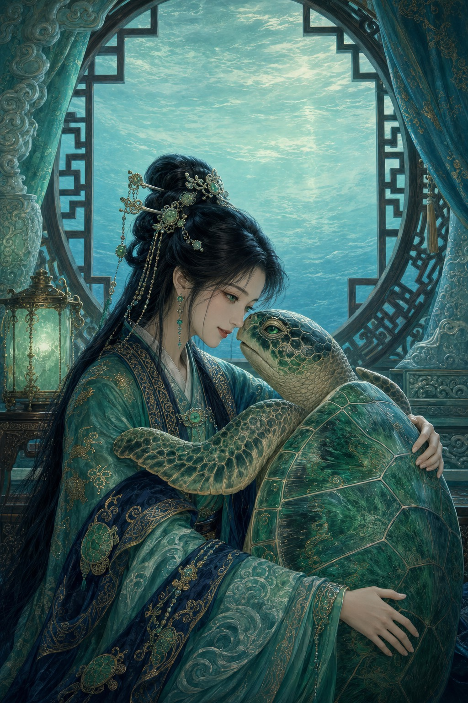

The Princess and the Turtle
Two worlds. One belonging. A war resolved through understanding, not force.
An orphaned fisherman, refugee of human wars, saves a wounded sea turtle from the village children. Years later a young noblewoman finds him and takes him to an underwater kingdom where the Elixir of Immortality keeps the turtle kingdom prosperous while other sea creatures starve. With war between sea peoples approaching, his value is not arms — it is translation. He has survived human wars. He recognizes the pattern.
Work in progress. This title is currently being written in two parallel tracks — a human-only draft and a human + AI assisted edition. Neither version is published yet. This page will be updated when the work is available.
Two Parallel Tracks
The same story, written two ways. Both drafts proceed in parallel; neither is a copy of the other.
Themes
- Misunderstanding as the engine of war — escalation by epistemic gap, not by malice
- The translator's position — his value is not arms, but seeing both sides
- Magical inequality — the privilege of the elixir versus the suffering of other kingdoms
- The blindness of kindness — peace without vigilance leads to war
- Bilateral knowledge as reform — the princess, the only being who has lived outside the elixir's reach
- The loneliness of the immortal — he returns to his village and finds centuries have passed
- Two worlds, one belonging — to stay is to declare which world is his now
Literary Lineage
A deliberate composite of three East Asian source traditions and one Western counterpoint. Each source occupies a distinct architectural layer.
| Layer | Source | Contribution |
|---|---|---|
| Narrative structure | Urashima Tarō | Fisherman + turtle + underwater kingdom + centuries passed |
| Emotional engine | Tanabata | Love that transcends temporal asymmetry; conscious waiting |
| Conflict engine | Bai She Zhuan | Marriage of mortal and supernatural attacked by external forces |
| Counterpoint | Romeo and Juliet | Two worlds; the choice of belonging — inverted in resolution |